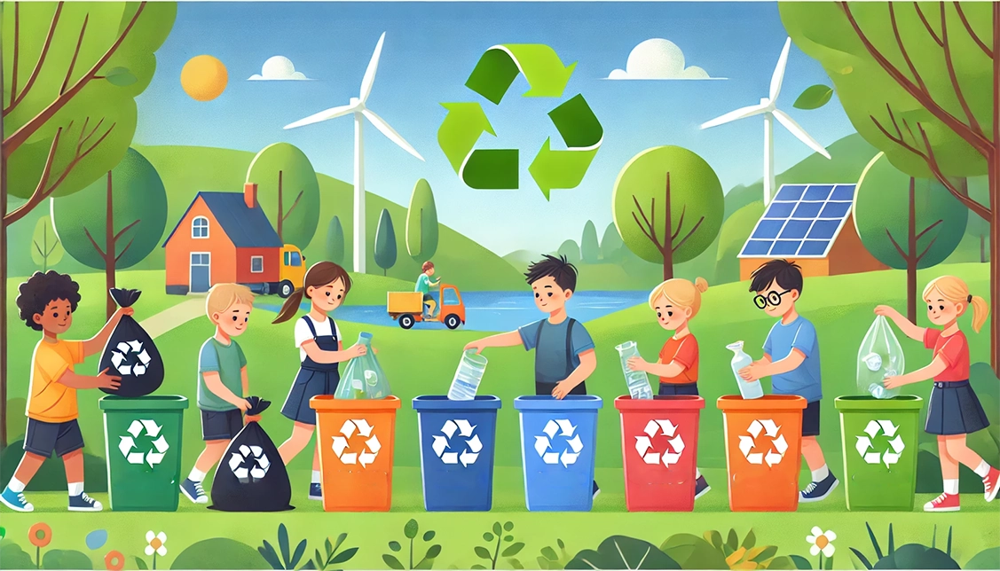
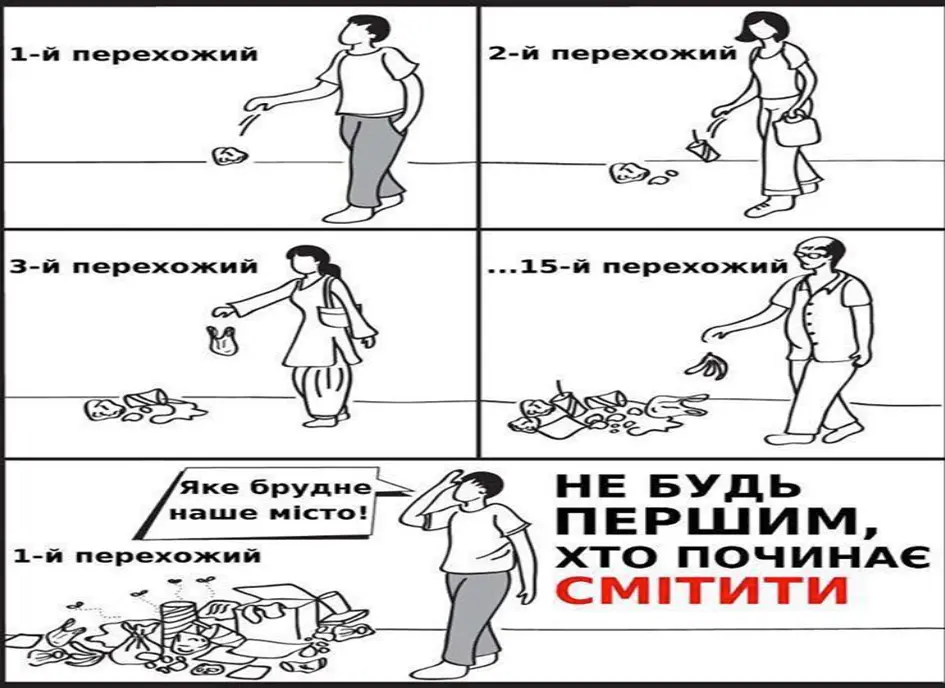
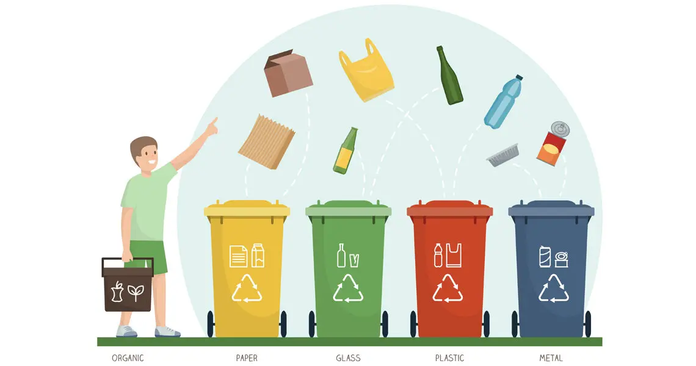
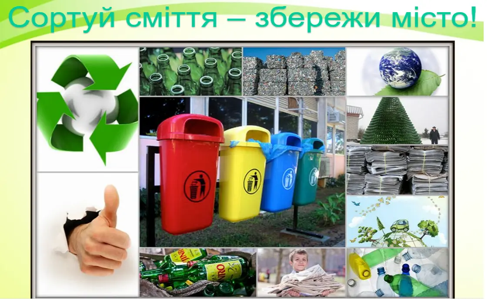
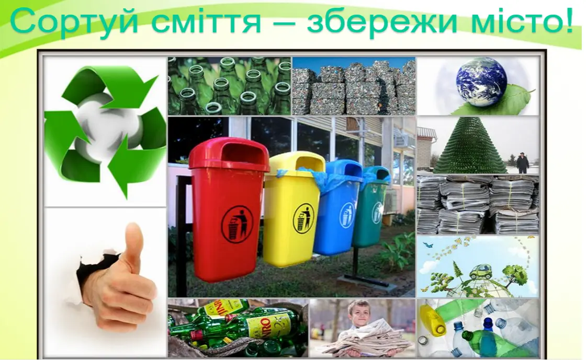
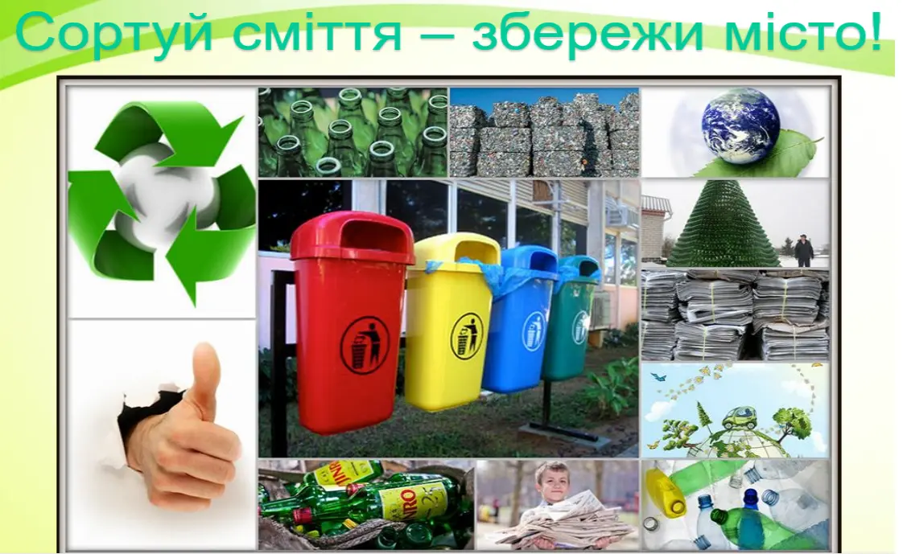

Правильно сортуй



 


🌿 Екологічна свідомість
Формуємо культуру відповідального поводження з відходами серед жителів міста
♻️ Переробка
Спрощуємо процес сортування та здачі вторсировини через зручну мережу пунктів прийому
🤝 Спільнота
Створюємо активну спільноту екосвідомих громадян, які дбають про майбутнє свого міста